Aiden X
Praktikforløb hos NOCA
Hvem er NOCA?
NOCA er en upolitisk, non-profit forening, hvis mål er at bygge bro mellem forskning og vidensdeling inden for HR. Deres medlemmer består af virksomheder fra hele verden, som kan deltage i konferencer og webinars, der giver HR-medarbejdere mulighed for at udvide deres viden og skabe relationer med fokus på HR-relaterede problemstillinger.
Mine læringsmål
Mine læringsmål for praktikforløbet handlede primært om kommunikation. Gennem mit studieforløb har netop kommunikation været den største udfordring for mig, og det er også noget jeg har kæmpet med i mit privatliv. Derfor vidste jeg, at jeg skulle have ekstra fokus på dette i min praktik.
Mine DARE, SHARE, CARE-mål så således ud:
I løbet af praktikforløbet arbejdede jeg aktivt med mine kommunikationsfærdigheder, og jeg har oplevet både udfordringer og fremskridt. I starten var jeg nervøs for at tage kontakt til mine kollegaer og bede om hjælp, da det er noget jeg ofte har undgået både i mit studie og privatliv. Dog oplevevede jeg hurtigt at jeg blev mødt af åbne og imødekommende kollegaer, hvilket gjorde det meget lettere at tage initiativ til samtaler.
En af de største udfordringer i mit praktikforløb var at dele mine følelser og erfaringer. Det føltes uvant og grænseoverskridende at være så åben i en professionel sammenhæng. Alligevel oplevede jeg, at jo mere jeg delte, des mere positiv response fik jeg tilbage. For eksempel havde jeg en samtale med min leder om de udfordringer jeg har med kommunikation, og det førte til en større forståelse fra hans side af — han delte også sine egne erfaringer med kommunikation på arbejdspladsen.
Jeg havde også fokus på at tage varer på mig selv i det arbejde jeg lavede. Jeg bliver hurtigt drænet for energi i sociale sammenhænge, og dette gør sig ligeledes også gældende når jeg arbejder tæt sammen med kollegaer. Denne udfordring fik jeg fortalt til min leder, som var meget forstående og gav mig frihed til at arbejde hjemmefra eller på kontoret efter behov.
Overordnet føler jeg, at jeg har rykket mig i forhold til mine læringsmål. Jeg har fået mere mod på at dele mine følelser og udfordringer med dem jeg arbejder sammen med. Fordi jeg blev mødt med åbenhed og forståelse. Selvom jeg stadig har visse udfordringer og forbedringspunkter, har praktikforløbet givet mig ro i maven og troen på at jeg nok skal klare mig godt på min næste arbejdsplads.
Hvad fik jeg udrettet?
I starten var planen at jeg skulle modernisere deres hjemmeside
og tilføje nye funktioner for at gøre den mere brugervenlig. Den plan blev dog hurtigt ændret.
I stedet fik jeg til opgave at designe en prototype af hvordan et bruger-dashboard eksempelvis kunne se ud på den næste version af deres hjemmeside. Der var ingen specifikke krav, så jeg tog udgangspunkt i de funktioner brugerne allerede havde adgang til såsom; eventkalender, artikler og tags. Den første iteration lavede jeg i Figma, baseret på deres designmanual.
De ønskede ligeledes at vise brugerne mere data om deres aktivitet. Derfor tilføjede jeg et "tags card", som viser de mest brugte tags for den enkelte bruger. Jeg sendte den første version til lederen og to medarbejdere, som kom med rigtig god feedback. De foreslog bl.a. interaktive tags, artikler baseret på brugerens interesser, tydelig information om events (online eller fysisk), en tilmeldingsfunktion og elementer af gamification.
I version 2 arbejdede jeg med at forbedre læsbarheden og skabe mere symmetri mellem kortene. Jeg tilføjede gamification i form af et tal over brugerens profilbillede, der viser, hvor mange events de har deltaget i, samt en "bedriftsknap", som viser opnåede bedrifter som fx "Du har deltaget i et webinar som har et AI tag" eller "Du har været medlem i 5 år".
Kalenderen fik flere funktioner, herunder ikoner, der viser om et event er online eller fysisk, samt en hover-effekt med Call to action knap hvor brugeren kan tilmelde sig og tilføje eventet til sin kalender. Artiklerne fik også et løft med tydelige tag-pills, som gør det klart for brugeren hvorfor de får anbefalet netop denne artikel, da de skal tage udgangspunkt i de tags brugeren har sat som favorit.
Til sidst arbejdede jeg kort med idéen om et AI-relateret kort, men vi valgte at sætte det på pause, da det endnu ikke var klart hvordan det skulle fungere.
Gik alt efter planen?
Min største interesse ligger i front-end udvikling og kodning af hjemmesider. I den indledende samtale med NOCA var planen at jeg skulle arbejde videre på deres WordPress-hjemmeside. Jeg er ikke den største fan af WordPress, da jeg synes det tager meget frihed væk fra udvikleren, men jeg var åben for at give det en chance.
Deres WordPress-hjemmeside var bygget af en freelancer, som jeg kunne kontakte for råd og vejledning. Planen var at min første uge skulle bruges på at forstå hjemmesidens mange plugins — hele 149 styks — og finde en løsning til at implementere login med LinkedIn.
Problemet opstod da freelanceren var meget svær at få fat i, for at blive sat ind i hvordan deres hjemmeside er opbygget. Jeg brugte derfor tiden på at se tutorials og undersøge mulige plugins, som kunne gøre det muligt at logge ind med LinkedIn. Efter en uge fik vi endelig et svar, og han foreslog et opkald den 15. januar. Jeg sad klar i Teams, men han dukkede aldrig op. Vi satte derfor et nyt møde op til den 20. januar, hvor han heldigvis deltog.
Da jeg begyndte at stille spørgsmål om, hvordan jeg bedst kunne implementere LinkedIn-login og hvad jeg skulle være opmærksom på, viste det sig hurtigt at han ikke rigtig vidste hvordan hjemmesiden fungerede. Han kunne ikke guide mig eller forklare de mange plugins. Vigtigst af alt, spurgte jeg ham hvordan jeg kunne implementere et plugin til Nocas allerede eksisterende Login feature. Men her fik jeg igen ikke mange svar.
Jeg drøftede situationen og dens udfordringer med min leder og han indrømmede at de heller ikke var tilfredse med freelancerens arbejde. På det tidspunkt stod jeg i en situation hvor jeg ikke vidste om jeg kunne nå at udrette noget på hjemmesiden, i den korte tid jeg havde tilbage som praktikant hos dem. Derfor lavede vi en ny plan: jeg skulle i stedet designe et bruger-dashboard.
Jeg gik i gang med den første version uden klare krav, som var lidt en udfordring for mig da jeg arbejder bedst inden for nogle fast satte rammer. Da jeg modtog deres designmanual sendte jeg en prototype til dem, og fik kort tid efter et svar med kravspecifikationer og god feedback, som hjalp mig med at indkrænse de enkelte features. Jeg fik feedback meget sent, som gjorde jeg godt kunne sidde lidt fast til tider.
Efter et par ugers arbejde med dashboardet satte vi det på pause, da det sidste krav var — et AI-element — som ikke var afklaret. I stedet skiftede vi fokus til at re-designe deres landingsside, hvilket også var en del af den oprindelige plan. Resten af forløbet brugte jeg derfor på at arbejde med forsiden og udvikle de forskellige elementer og sektioner.
Alt i alt fik vi mest muligt ud af forløbet, selvom en del tid gik tabt på WordPress-problemer og manglende kommunikation fra forskellige parter.
Hvordan gik det for mig i forløbet?
Mit praktikforløb hos NOCA har været svingende. Som nævnt ændrede vi planen efter tre uger, hvilket kostede meget tid. Men vi nåede alligevel langt i de efterfølgende uger takket være god kommunikation og løbende sparring. Jeg gjorde en indsats for at inddrage dem mest muligt og spørge om feedback undervejs.
Som en lille virksomhed har de meget travlt, hvilket betød at der til tider kunne gå flere dage før jeg fik svar. Hvis de eksempelvis havde en uge med mange konferencer og webinars, var det naturligvis deres fokus. Det kunne jeg godt mærke påvirkede mig, da jeg arbejder i "bølger" — 2-3 timers arbejde ad gangen, efterfulgt af pauser. Hvis jeg sad fast og manglede svar, kunne det sætte mig i stå. Jeg forsøgte derfor at møde op fysisk på kontoret, hvilket til dels hjalp, men jeg blev også hurtigere træt og havde brug for længere pauser efterfølgende.
I sammenligning til mine studieprojekter har feedback og samarbejde været meget langsommerer i min praktik. Det har været en lidt svær omstilling, da jeg arbejder bedst med hurtig og kort feedback så jeg kan blive i mine fokuserede arbejdsbølger. Jeg tror det skyldes at det er en mindre virksomhed, hvor alle har meget travlt med deres egne arbejdsopgaver, og at der ikke er dedikerede folk til hjemmeside udvikling. Så fremad rettet, vil det hjælpe mig meget at være i et team der har til opgave at arbejde på hjemmesider. Jeg havde også en ide om at freelance måske kunne være noget for mig, men det er jeg blevet klogerer på. Freelance kræver selvstændighed og færdigheder i at kunne køre deres egen forretning. Det er gået op for mig at det vil ikke fungerer for mig. Jeg skal bruge faste rammer, og have mulighed for at fokuserer 100% på mit kode og arbejdsopgaver.
Hvad tager jeg med mig fra NOCA?
Personligt har jeg fået større selvtillid i forhold til at tage kontakt med dem, jeg arbejder med, og bede om hjælp eller feedback. Det har tidligere været en barriere for mig. Jeg har haft en god oplevelse hos NOCA, da de har været særligt opmærksomme på mental sundhed og de individuelle udfordringer, som medarbejdere kan have. Dette betød, at alle var meget fokuserede på at give plads og spørge, om der var nogle konkrete ting, man havde brug for.
Ligeledes tager jeg også med mig, at selvom en plan ikke går 100% som forventet, kan jeg omstille mig og få mest muligt ud af en dårlig situation – også selvom det, jeg endte med at lave, ikke interesserede mig professionelt. Jeg har også lært, at jeg skal være bedre til at give min mening til kende og være mere insisterende og tydelig i forhold til, hvad der vil fungere, og hvad der ikke vil.
Fagligt har jeg fået et indblik i, hvordan det er at arbejde med versioner og skabe forskellige iterationer baseret på feedback. Jeg har også lært at tage et eksisterende brands identitet med ind i de designs, jeg lavede, og altid have deres design som prioritet. Det hjalp mig meget at have noget, som allerede eksisterede, at arbejde ud fra, da jeg ikke er den mest naturlige til at komme op med designs og visuelle stilarter.
En ting, jeg ville have ønsket, vi kunne have gjort, var at lave brugertests på de ting, jeg lavede, i stedet for at gætte på, hvad de godt kunne tænke sig og ville finde brugbart. Jeg tager også med mig, at mange af de principper inden for UX, såsom Gestalt-love, visuelt hierarki og konsistens, for nogle virksomheder – nok især mindre virksomheder – ikke er i fokus i særlig høj grad. På det område følte jeg, at jeg kunne give dem meget værdi og løfte deres designs til en mere moderne standard.
Til sidst har jeg fået bekræftet, at jeg skal arbejde med frontend-udvikling og kodning af hjemmesider – og ikke med UX og design. Selvom jeg har interesse for UX og design, har det ikke den samme professionelle tiltrækning som frontend-udvikling.
Jeg har også fået bekræftet, at jeg har brug for en teamleder, som kan have det overordnede overblik, da jeg selv har svært ved at danne mig et overblik over arbejdsopgaver og prioriteringer. I NOCA fik jeg meget frihed til at lave de opgaver, der interesserede mig, hvilket virkede til at være et plus, men i en professionel kontekst, hvor jeg fungerer bedst som en "arbejdsbi", har jeg brug for mere struktur.
Mit forløb var derfor godt i den forstand, at jeg har kunnet skære en masse ting fra, som jeg skal undgå i min fremtid som frontend-udvikler. Jeg har lært en masse om, hvordan det er at være i en rolle som UX-designer – og at den rolle ikke passer til mine interesser og kompetencer.